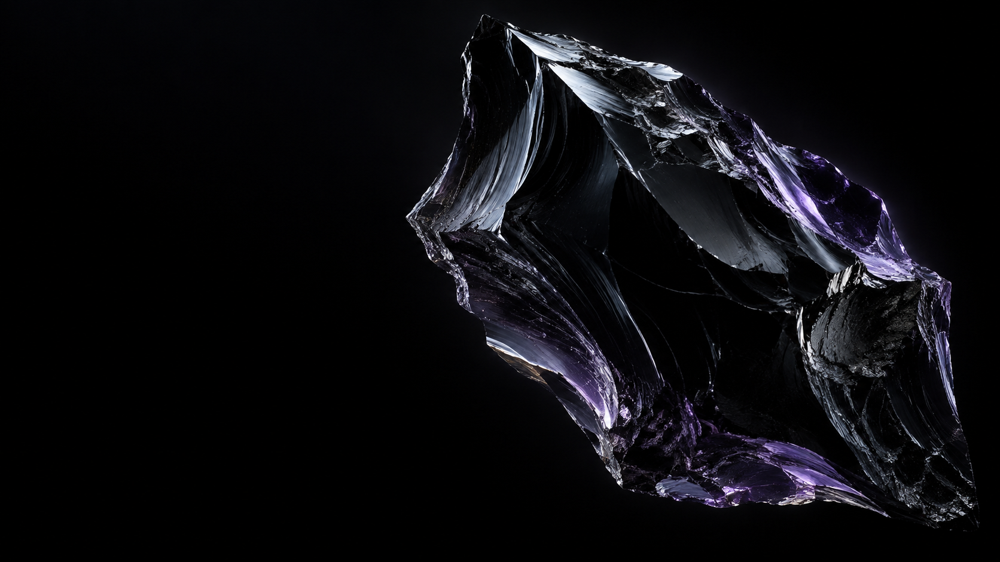

Newsletter / X4 months
$1.2Kto$18.4Kmonthly revenue
Reframed scattered expertise into a product suite and recurring membership, then built the path from audience to buyer.

Revenue infrastructure for creators
Obsidx designs the products, offers and conversion systems that make your audience commercially durable—without turning your brand into a sales channel.
Selected client-reported outcomes
The thesis
Algorithms can create reach. They cannot create resilience. We help creators convert expertise and trust into products, recurring revenue and conversion systems they control.
Selected outcomes
Reframed scattered expertise into a product suite and recurring membership, then built the path from audience to buyer.
Replaced sporadic sponsorship income with a diversified product and conversion ecosystem.
Built a membership engine producing $22K in recurring monthly revenue at the reported milestone.
Results are client-reported and not guarantees. Outcomes depend on audience, offer, execution and market conditions.
What we build
Find the valuable intersection between what your audience needs, what you know and what the market will pay for.
Turn your expertise into products and memberships designed for clear outcomes, retention and healthy margins.
Connect content, qualification, nurture and purchase into a measured journey that compounds instead of resets.
How we work
We work closely with a limited number of creator-led businesses at a time. Every engagement begins with the economics—not a prebuilt funnel.
We examine demand, positioning, existing revenue, audience behavior and operational constraints.
We map what to sell, how it delivers value and how prospects move from attention to decision.
We build the assets, support execution and improve the system using commercial data—not vanity metrics.
A good fit
Obsidx is designed for creators and personal brands with demonstrated audience trust, valuable expertise and the ambition to build a durable company.
Check eligibility ↗